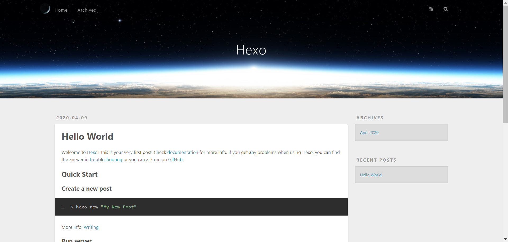

HEXO：快速、简洁且高效的博客框架
1. HEXO安装
- 安装Git
Git官网下载速度感人，可以选择国内镜像下载git，然后安装…
- 安装node.js
Hexo是基于NodeJS环境的静态博客，搭建基本全靠npm，npm是随同NodeJS一起安装的包管理工具。node.js下载，安装…
npm全称Node Package Manager，是node.js的模块依赖管理工具。由于npm的源在国外，所以国内用户使用起来各种不方便。配置国内淘宝npm镜像方法：
1 | 永久配置 |
- 安装hexo
1 | -g全局安装 |
- 初始化hexo博客目录
选择你想要的存放博客本地文件路径，根据实际情况执行以下命令：
1 | hexo init blog # 将会新建一个blog的文件夹，最后hexo项目的初始化位置 |
即可预览初始化的hexo博客，到这里你已经初步搭建好你的博客框架

在blog目录下，存在以下文件夹和文件：
- node_modules：是依赖包
- public：存放的是生成的页面
- scaffolds：命令生成文章等的模板
- source：用命令创建的各种文章
- themes：主题
- _config.yml：整个博客的配置
- db.json：source解析所得到的
- package.json：项目所需模块项目的配置信息
2. 配置博客信息
打开博客主目录下的_config.yml文件，修改或者添加配置参数。
同时，进入themes目录下的主题文件夹，修改_config.yml，同样配置信息。
在此过程中，需要阅读相关说明文档（例如主题的说明文档）
3. 写博客
- 新建博文，在博客主目录中执行：
1 | hexo new xxx #xxx为你的博客名称 |
然后打开source/_post打开创建的xxx.md，编辑即可；
- 上传博文到服务器
在主目录中执行：
1 | hexo clean # 清楚之前生成的网站文件 |
4. 博客中上传图片
-
首先编辑主目录中配置文档
_config.yml，修改post_asset_folder属性为：true -
安装插件
hexo-asset-image，在主目录下执行：1
npm install hexo-asset-image --save
-
此时使用
hexo new xxx时候，在source/_post目录下生成md文件的同时，也会产生一个同名文件夹，该文件夹用于放置对应博文图片。1
2
3# markdown添加图片格式
# 
 -
这里po一个我遇到的问题
上传之后，发现网页没有正确加载图片，查看网页代码，发现路径很奇怪…之后，我修改
hexo-asset-image插件中的index.js文件中的一处代码，才解决问题：node_modules/hexo-asset-image/index.js的58行改为：1
$(this).attr('src', src);
5. 公式支持
基于Hexo搭建的个人博客，默认情况下渲染数学公式会产生一些问题，我遇到的便是无法渲染。Hexo默认使用hexo-renderer-marked引擎渲染markdown，最理想的办法便是替换渲染引擎。
参考：
-
安装
hexo-renderer-markdown-it-plus插件1
2
3
4
5
6npm uninstall hexo-renderer-marked --save
npm install hexo-renderer-markdown-it-plus --save
一些依赖
npm install markdown-it-katex --save
npm install markdown-it-mark --save -
配置
打开主目录博客配置文档
_config.yml，添加：1
2
3
4
5
6
7
8
9
10
11
12
13
14
15
16
17markdown_it_plus:
highlight: true
html: true
xhtmlOut: true
breaks: true
langPrefix:
linkify: true
typographer:
quotes: “”‘’
pre_class: highlight
plugins:
- plugin:
name: markdown-it-katex
enable: true
- plugin:
name: markdown-it-mark
enable: false -
网页加载CSS
修改主题网页生成相关文件代码，确保网页
head部分加载mathjax样式表。1
<link href="https://cdn.bootcss.com/KaTeX/0.7.1/katex.min.css" rel="stylesheet">
-
公式示例
段落内公式：， 字母：
居中公式：